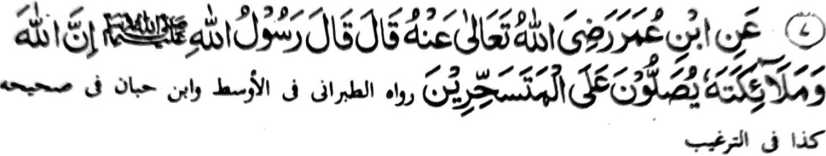

Hadith 7

Miyakathitayan ko Ibn 'Umar (Radhiallaho Anhoma) a pitharo iyan a pitharo o Rasulollah (Sallallaho Alaihi Wasallam), “Mata-an a so Allah (Subhaanaho Wa Ta’ala) go so manga Mala-ikat Iyan na pezalawatan Niran so pekhan igira ipopowasa. ”
OSAYAN
Tanto a mala a limo reketano o Allah (Subhaanaho Wa Ta’ala) a apiya so kapekhan tano sa pangenengken ko ona-an o Sobo a ipephowasa tano na tanto a mala-i balas. Madakel a manga Hadith a inosay ron so kalbihan ago balas o ‘Sehri’ (Kakan igira khapita). So Allama Ainey (Rahmatullahi ‘Alaihi), a miosay ko (kitab a Sahih) Bukhari na inaloy niyan so kalbihan o ‘Sehri’ a miyakapo-on ko sapolo ago pito ko manga Sahabah go so langon o manga Ulama na miyata-ayon siran ko kababaloy niyan a ‘Mustahab’ [tanto a mapiya]. Madakel a manga tao a miyapapas kiran angka-iya mala a balas sabap ko kala iran-i bokel. Aden pen a saba-ad a so kiyapasad o Taraweeh na kiyan niran den so ipephowasa iran na oriyan niyan na baden miyakatorog. Ay kala a limo a miyalepas iran! So Sehri na aya titho a ma-ana niyan na so kakan si-i ko kaga-an niyan den Sobo. Saba-ad ko manga ulama a miyatharo iran a aya wakto o Sehri a ipho-on ko kalo-oki sa gawi-i [Mirquat]. So mizorat ko [kitab a] Kash-shaff (Zamakhshari) na biyagi iyan so mababasa gawi-i sa nem bagi, na gi-i niyan tharo-on a so mori a ika nem bagi na giyoto-i wakto a ‘Sehri’; sabap ro-o na so gagawi-i [ipho-on sa kasedep o alongan taman ko Sobo] na aya kalendo niyan na sapolo ago dowa ka oras na so mori a dowa ka oras na giyoto-i wakto o ‘Sehri’. Paliyogat so katatademi ron a so kakan ko kipekhibolog a gawi-i na taralebi a di so kakan ko miya-onaan niyan, a aya sarat iyan na somarig so pamikiran sa so ‘Sehri’ na aya kiyakana-on na da pen Zobo. So manga Hadith na mipepeno-on so manga Kalbihan o ‘Sehri’.
So Rasulollah (Sallallaho ‘Alaihi Wasallam) na miyatharo iyan: “Aya mbida-an ko kaphowasa tano ago so powasa o siran a Ahlul-Kitab [so manga Yahodi ago so manga Nasrani] na si-i matatago ko kapekhan tano igira ‘Sehri' [ipopowasa] a siran na di siran khan.” So Nabi (Sallallaho ‘Alaihi Wasallam) na miyatharo iyan: “Kan kano igira ipopowasa sabap sa kapapadaleman sa mala a Barakah; ago laba.” Ped iyan pen, “Telo a nganin a kapapadaleman sa mala a Barakah [mapiya]: si-i ko Jama’ah, go si-i ko kakan sa Thareed ago si-i ko ‘Sehri’.” Si-i sangka-iya Hadith, na so kiyatharo-a ko Jama’ah na rangkom, sa khapakay a mirakhes ro-o so Sambayang a barajoma ago so manga ped a ‘Amaal a gi-i minggolalan o madakel a tao, a giyoto-i sabap a kaphakatalingoma kiran o tabang o Allah (Subhaanaho Wa Ta’ala). So “Thareed” na mapiya-i ta-am a pangenengken a so roti ago sapo na initinda. Aya ika telo a miya-aloy sangka-iya a Hadith na so ‘Sehri’. Igira aden a inimbitar o Rasulollah (Sallallaho ‘Alaihi Wasallam) ko manga Sahabah niyan sa kakan niyan a ped iyan amay ka "Sehri’ na gi-i niyan non tharo-on: “Ato-ang ka raken na kan ka sa babarakaten a pangenengken.” Pitharo o isa a Hadith: “Kan ka ko ‘Sehri’ ka an ka katago-i sa bager ko kaphowasa, go pakatorog ka igira miyapolid a alongan [Qailolah] ka an ka makakowa sa bager ko kapagenao ko kinibolog a gawi-i [pantag ko Ibadaat].” So Abdullah bin Haarith (Radhiallaho ‘Anho) na miyapanothol iyan a pho-on ko isa ko manga Sahabah a pitharo iyan, “Miyaka-isa na somiyong ako ko Rasulollah (Sallallaho ‘Alaihi Wasallam) ko masa a pamomolowan a kapekhan iyan ko Sehri. Oriyan niyan na miyatharo o Rasulollah (Sallallaho Alaihi Wasallam), ‘Mapepeno ini a Barakah a inibegay reka o Allah (Subhaanaho Wa Ta’ala). Di ngka pelepasa.’” So Rasulollah (Sallallaho ‘Alaihi Wasallam) ko panamar iyan sa kipephangoyaten niyan reketano lalayon ko ‘Sehri’ na miyatharo iyan, “Apiya da a pangenengken, na apiya satiman a korma na kana niyo o di na apiya ba kano den maka-inom sa ig.” Giyoto-i sabap a kagiya matatangked a mala a kamapiya-an ago mala a balas a madadalem ko ‘Sehri’, na so manga Muslim na panamari ran a kinggolalanen niran sangka-iya ola-ola ko taman a khagaga iran non. Aya ba den a thanodan, na si-i ko langowan taman na anda-i sokor, ka o kalawani so kiyasosokoran na phakakaid. go di peman mapiya o ba tanto a paka-itoa so khen a tanto a mamimpir so tao sangkoto a tenday o kaphowasa, o di na di peman tanto a zobra-an a ba den monga sa di kasosorot. Oman-oman den na ipezapar reketano o ba tano tanto a peno-a so tiyan.
Si-i ko osayan niyan ko “Sahih Bukhari” na so Ibne Hajar na inaloy niyan so mbaram-barang a sabap ko kala-i Barakah o ‘Sehri’:
a. Sabap sa si-i rekaniyan [a Sehri] na gi-i minggolalan so Sunnah
b. Misabap ko Sehri a kapekhibida tano ko okit-okit o Ahlul Kitab, a lalayon so kipezogo-on non reketano (ko kasopaka tano ron).
c. Pekhabager iyan so ‘Ibadaat’.
d. Mapephakapagomareg iyan so Ikhlas ko ‘Ibadaat’.
e. Pephaka-ogop sa kapekhada o rarangit, a kalalayaman a gi-i manggola-ola igira kagotem.
f. So ‘Sehri’ na wakto a itatarima ko manga pangeni.
g. Si-i ko wakto a ‘Sehri’, na pekhabegan sa okit so tao a kakhatademi niyan ko Allah (Subhaanaho Wa Ta’ala), go so kapaka-nggalebek sa Dhikr a miporo so mbala a lima sa pangeni Rekaniyan.
Saba-ad baden na-i ko manga ala a sabap; sa madakel pen a salakao san. Saba-ad ko manga Auliya na kapaparampangan siran o ino so kakan igira ‘Sehri’ ba niyan masosopak so antap o kaphowasa antawa ka di. Aya kepit iran non na aya antap o kaphowasa na so kalidasi ko kakan, go so kainom, go so kapamakay sa karoma, sa giyoto-i sabap a so ‘Sehri’ na miyasopak iyan so antap o kaphowasa. Si-i ko pamikiran aken non na so kala-a khen o tao na si-i matatago ko mbida-bida-an o galebek o manga tao. Ibarat, na so siran a manga morit a pamomolowan a gi-i ran kathontot sa Ilmo ko Agama, na so minitaralo a kaito o pangenengken na phakakaid kiran; siran na taralebi so kena ba tanto a maito [a pangenengken] sabap sa gi-i siran thontot sa Ilmo ko Deen, a tanto a mala-i kipantag (sa kaparihala ago kapakalangkap o Islam]. Lagidoto mambo so siran a matetembang ko Dhikr ago so manga ped a galebek ko Agama. So peman so manga tao a da kiran angkanan a manga reregen a galebek na kan siran sa maito igira ‘Sehri’.
Miyaka-isa na so Rasulollah (Sallallaho ‘Alaihi Wasallam) na piyakalangkap iyan ko siran a magonot sa Jihad “Da a kalbihan o kaphowasa ko masa a gi-i kandalakao.” Giyangkanan na si-i mipapantag ko bolan a Ramadhan, ko masa a so saba-ad ko manga Sahabah na gi-i phowasa. So Allama Sha'raani (Rahmatullahi ‘Alaihi) na miya-aloy niyan ko kitab a Sharh Iqna: “Miyakaphapasada kami a di ami pheno-on so manga tiyan nami (sa tarotop) igira pekhan kami, balabao ron ko manga kagagawi-i ko Ramadhan." Taralebi a so tao na kan sa maito si-i ko manga kagagawi-i ko Ramadhan a di so [kapekhan iran ko] manga ped a kagagawi-i. Aya sabap iyan na antona-ai kakhakowa o [‘enda-o o] kapamowasa ko oriyan o kapaka-osog igira ipopowasa [Sehri] ago igira ilalapis [Iftar]? So manga Auliya na miyatharo iran a, “Saden sa lalayon gi-i magongos ko soled o Ramadhan na tatap a kapakalilidas iyan ko kamarata-an o Shaitan ko tenday o saragon, taman peman ko kaoma o phakatondog a Ramadhan.”
So [kitab a] Sharah Ihya ‘Ulumid Deen na miyapanothol iyan so kiyasagadan o saba-ad ko manga Auliya, lagid o Sahl bin Abdullah Tastari (Rahmatullahi ‘Alaihi), a aya kalalayaman na maka-isa makakan ko soled o sapolo ago lima gawi-i, na igira Ramadhan na aya bo a pekhen niyan na sa-ami; ogaid na pantag bo sa kasongkada ko Sunnah, na lalayon baden phaginom sa ig oman gawi-i igira ilalapis ago ipopowasa. So Shaikh Junaid (Rahmatullahi ‘Alaihi) na lalayon gi-i mamowasa ko soled o saragon. Ogaid na igira so manga pemamasela-an a manga bolayoka iyan na miyasalak a somiyong siran non, na aya kalalayaman na pemboka na pekhan a ped iran sa gi-i niyan tharo-on. “So balas o kaboka ago kipagato-angen ko manga [pemamasela-an] a bolayoka na daden a mbida-an niyan ago so kapamowasa sa Sunnat.”